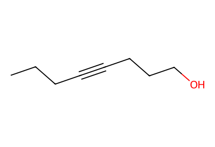
CCCC#CCCCO62 molecular records, 41 events, 45 operation records and 6 paths. Salts, racemates, mixture yields and source conflicts retained. Independent review pending.
完整 JSON · 逐步 CSV · 路线序列 · SDF · HRMS 核对
| 事件 | 分子连接 | 报告产率 | Canonical reaction SMILES |
|---|---|---|---|
| E01 | 13 → 14 | 14: 86% | CCCC#CCCCO>>CCC/C=C\CCCO |
| E02 | 14 → 11 | 11: 85% | CCC/C=C\CCCO>>CCC/C=C\CCC=O |
| E03 | 11 + TMS-acetylene → rac-17a | rac-17a: 83% | C#C[Si](C)(C)C.CCC/C=C\CCC=O>>CCC/C=C\CC[C@@H](O)C#C[Si](C)(C)C |
| E04 | rac-17a → 16a | 16a: 91% | CCC/C=C\CC[C@@H](O)C#C[Si](C)(C)C>>CCC/C=C\CCC(=O)C#C[Si](C)(C)C |
| E05 | 16a → 17a | 17a: 85% | CCC/C=C\CCC(=O)C#C[Si](C)(C)C>>CCC/C=C\CC[C@@H](O)C#C[Si](C)(C)C |
| E06 | 17a + PMBCl → 6a | 6a: 96% | CCC/C=C\CC[C@@H](O)C#C[Si](C)(C)C.COc1ccc(CCl)cc1>>C#C[C@@H](CC/C=C\CCC)OCc1ccc(OC)cc1 |
| E07 | 15 + TMS-acetylene → rac-17b | rac-17b: 96% | C#C[Si](C)(C)C.CCCCCC=O>>CCCCC[C@@H](O)C#C[Si](C)(C)C |
| E08 | rac-17b → 16b | 16b: 99% | CCCCC[C@@H](O)C#C[Si](C)(C)C>>CCCCCC(=O)C#C[Si](C)(C)C |
| E09 | 16b → 17b | 17b: 91% | CCCCCC(=O)C#C[Si](C)(C)C>>CCCCC[C@@H](O)C#C[Si](C)(C)C |
| E10 | 17b + PMBCl → 6b | 6b: 87% | CCCCC[C@@H](O)C#C[Si](C)(C)C.COc1ccc(CCl)cc1>>C#C[C@@H](CCCCC)OCc1ccc(OC)cc1 |
| E11 | 17a → 17a-diagnostic | 17a-diagnostic: 48% | CCC/C=C\CC[C@@H](O)C#C[Si](C)(C)C>>CCCCCCC[C@@H](O)CC |
| E12 | 11 + 12 → 10 | 10: 89% | C=C(/C=C(/OC)O[Si](C)(C)C)O[Si](C)(C)C.CCC/C=C\CCC=O>>CCC/C=C\CC[C@@H](O)CC(=O)CC(=O)OC |
| E13 | 10 + benzoyl-chloride → S1 | S1: 84% | CCC/C=C\CC[C@@H](O)CC(=O)CC(=O)OC.O=C(Cl)c1ccccc1>>CCC/C=C\CC[C@H](C/C(=C/C(=O)OC)OC(=O)c1ccccc1)OC(=O)c1ccccc1 |
| E14 | 10 → 10-hydrogenated | 10-hydrogenated: 100% | CCC/C=C\CC[C@@H](O)CC(=O)CC(=O)OC>>CCCCCCC[C@@H](O)CC(=O)CC(=O)OC |
| E15 | 10 → 9 + syn-9 | not reported | CCC/C=C\CC[C@@H](O)CC(=O)CC(=O)OC>>CCC/C=C\CC[C@@H](O)C[C@@H](O)CC(=O)OC.CCC/C=C\CC[C@@H](O)C[C@H](O)CC(=O)OC |
| E16 | 9 → S2 | S2: 90% | CCC/C=C\CC[C@@H](O)C[C@H](O)CC(=O)OC>>CCC/C=C\CC[C@@H]1C[C@H](O)CC(=O)O1 |
| E17 | S2 + TBSCl → 8 | 8: 87% | CC(C)(C)[Si](C)(C)Cl.CCC/C=C\CC[C@@H]1C[C@H](O)CC(=O)O1>>CCC/C=C\CC[C@@H]1C[C@H](O[Si](C)(C)C(C)(C)C)CC(=O)O1 |
| E18 | 8 → S3 | S3: 91% | CCC/C=C\CC[C@@H]1C[C@H](O[Si](C)(C)C(C)(C)C)CC(=O)O1>>CCC/C=C\CC[C@@H](O)C[C@@H](CCO)O[Si](C)(C)C(C)(C)C |
| E19 | S3 + pivaloyl-chloride → 18 | 18: 88% | CC(C)(C)C(=O)Cl.CCC/C=C\CC[C@@H](O)C[C@@H](CCO)O[Si](C)(C)C(C)(C)C>>CCC/C=C\CC[C@@H](O)C[C@@H](CCOC(=O)C(C)(C)C)O[Si](C)(C)C(C)(C)C |
| E20 | 18 + MOMCl → 19 | 19: 94% | CCC/C=C\CC[C@@H](O)C[C@@H](CCOC(=O)C(C)(C)C)O[Si](C)(C)C(C)(C)C.COCCl>>CCC/C=C\CC[C@H](C[C@@H](CCOC(=O)C(C)(C)C)O[Si](C)(C)C(C)(C)C)OCOC |
| E21 | 19 → 7 | 7: 96% | CCC/C=C\CC[C@H](C[C@@H](CCOC(=O)C(C)(C)C)O[Si](C)(C)C(C)(C)C)OCOC>>CCC/C=C\CC[C@H](C[C@@H](CCI)O[Si](C)(C)C(C)(C)C)OCOC |
| E22 | 7 + 6a → 20a | 20a: 78% | C#C[C@@H](CC/C=C\CCC)OCc1ccc(OC)cc1.CCC/C=C\CC[C@H](C[C@@H](CCI)O[Si](C)(C)C(C)(C)C)OCOC>>CCC/C=C\CC[C@H](C[C@@H](CCC#C[C@@H](CC/C=C\CCC)OCc1ccc(OC)cc1)O[Si](C)(C)C(C)(C)C)OCOC |
| E23 | 7 + 6b → 20b | 20b: 89% | C#C[C@@H](CCCCC)OCc1ccc(OC)cc1.CCC/C=C\CC[C@H](C[C@@H](CCI)O[Si](C)(C)C(C)(C)C)OCOC>>CCC/C=C\CC[C@H](C[C@@H](CCC#C[C@@H](CCCCC)OCc1ccc(OC)cc1)O[Si](C)(C)C(C)(C)C)OCOC |
| E24 | 20a → 21a | 21a: 97% | CCC/C=C\CC[C@H](C[C@@H](CCC#C[C@@H](CC/C=C\CCC)OCc1ccc(OC)cc1)O[Si](C)(C)C(C)(C)C)OCOC>>CCC/C=C\CC[C@H](C[C@@H](CCC#C[C@H](O)CC/C=C\CCC)O[Si](C)(C)C(C)(C)C)OCOC |
| E25 | 20b → 21b | 21b: 87% | CCC/C=C\CC[C@H](C[C@@H](CCC#C[C@@H](CCCCC)OCc1ccc(OC)cc1)O[Si](C)(C)C(C)(C)C)OCOC>>CCC/C=C\CC[C@H](C[C@@H](CCC#C[C@H](O)CCCCC)O[Si](C)(C)C(C)(C)C)OCOC |
| E26 | 21a + phthalimide → 22a | 22a: 75% | CCC/C=C\CC[C@H](C[C@@H](CCC#C[C@H](O)CC/C=C\CCC)O[Si](C)(C)C(C)(C)C)OCOC.O=C1NC(=O)c2ccccc21>>CCC/C=C\CC[C@H](C[C@@H](CCC#C[C@H](CC/C=C\CCC)N1C(=O)c2ccccc2C1=O)O[Si](C)(C)C(C)(C)C)OCOC |
| E27 | 21b + phthalimide → 22b | 22b: 79% | CCC/C=C\CC[C@H](C[C@@H](CCC#C[C@H](O)CCCCC)O[Si](C)(C)C(C)(C)C)OCOC.O=C1NC(=O)c2ccccc21>>CCC/C=C\CC[C@H](C[C@@H](CCC#C[C@H](CCCCC)N1C(=O)c2ccccc2C1=O)O[Si](C)(C)C(C)(C)C)OCOC |
| E28 | 22a + guanidinylating-reagent → 23a | 23a: 88% | CC(C)(C)OC(=O)N=C(NC(=O)OC(C)(C)C)n1cccn1.CCC/C=C\CC[C@H](C[C@@H](CCC#C[C@H](CC/C=C\CCC)N1C(=O)c2ccccc2C1=O)O[Si](C)(C)C(C)(C)C)OCOC>>CCC/C=C\CC[C@H](C[C@H](CCC#C[C@H](CC/C=C\CCC)N/C(=N/C(=O)OC(C)(C)C)NC(=O)OC(C)(C)C)O[Si](C)(C)C(C)(C)C)OCOC |
| E29 | 22b + guanidinylating-reagent → 23b | 23b: 82% | CC(C)(C)OC(=O)N=C(NC(=O)OC(C)(C)C)n1cccn1.CCC/C=C\CC[C@H](C[C@@H](CCC#C[C@H](CCCCC)N1C(=O)c2ccccc2C1=O)O[Si](C)(C)C(C)(C)C)OCOC>>CCC/C=C\CC[C@H](C[C@H](CCC#C[C@H](CCCCC)N/C(=N/C(=O)OC(C)(C)C)NC(=O)OC(C)(C)C)O[Si](C)(C)C(C)(C)C)OCOC |
| E30 | 23a → S4 | quantitative | CCC/C=C\CC[C@H](C[C@H](CCC#C[C@H](CC/C=C\CCC)N/C(=N/C(=O)OC(C)(C)C)NC(=O)OC(C)(C)C)O[Si](C)(C)C(C)(C)C)OCOC>>CCC/C=C\CC[C@H](C[C@H](O)CCC#C[C@H](CC/C=C\CCC)N/C(=N/C(=O)OC(C)(C)C)NC(=O)OC(C)(C)C)OCOC |
| E31 | 23b → S5 | S5: 86% | CCC/C=C\CC[C@H](C[C@H](CCC#C[C@H](CCCCC)N/C(=N/C(=O)OC(C)(C)C)NC(=O)OC(C)(C)C)O[Si](C)(C)C(C)(C)C)OCOC>>CCC/C=C\CC[C@H](C[C@H](O)CCC#C[C@H](CCCCC)N/C(=N/C(=O)OC(C)(C)C)NC(=O)OC(C)(C)C)OCOC |
| E32 | S4 + MsCl → 5a | 5a: 88% | CCC/C=C\CC[C@H](C[C@H](O)CCC#C[C@H](CC/C=C\CCC)N/C(=N/C(=O)OC(C)(C)C)NC(=O)OC(C)(C)C)OCOC.CS(=O)(=O)Cl>>CCC/C=C\CC[C@H](C[C@@H](CCC#C[C@H](CC/C=C\CCC)N/C(=N/C(=O)OC(C)(C)C)NC(=O)OC(C)(C)C)OS(C)(=O)=O)OCOC |
| E33 | S5 + MsCl → 5b | 5b: 99% | CCC/C=C\CC[C@H](C[C@H](O)CCC#C[C@H](CCCCC)N/C(=N/C(=O)OC(C)(C)C)NC(=O)OC(C)(C)C)OCOC.CS(=O)(=O)Cl>>CCC/C=C\CC[C@H](C[C@@H](CCC#C[C@H](CCCCC)N/C(=N/C(=O)OC(C)(C)C)NC(=O)OC(C)(C)C)OS(C)(=O)=O)OCOC |
| E34 | 5a + carbon-monoxide + methanol → 24 | 24: 88% | CCC/C=C\CC[C@H](C[C@@H](CCC#C[C@H](CC/C=C\CCC)N/C(=N/C(=O)OC(C)(C)C)NC(=O)OC(C)(C)C)OS(C)(=O)=O)OCOC.CO.[C-]#[O+]>>CCC/C=C\CC[C@H](C[C@@H]1CCC2=C(C(=O)OC)[C@H](CC/C=C\CCC)N/C(=N/C(=O)OC(C)(C)C)N21)OCOC |
| E35 | 24 + Boc2O → S6 | S6: 84% | CC(C)(C)OC(=O)OC(=O)OC(C)(C)C.CCC/C=C\CC[C@H](C[C@@H]1CCC2=C(C(=O)OC)[C@H](CC/C=C\CCC)N/C(=N/C(=O)OC(C)(C)C)N21)OCOC>>CCC/C=C\CC[C@H](C[C@@H]1CCC2=C(C(=O)OC)[C@H](CC/C=C\CCC)N(C(=O)OC(C)(C)C)/C(=N/C(=O)OC(C)(C)C)N21)OCOC |
| E36 | S6 → 3a | 3a: 90% | CCC/C=C\CC[C@H](C[C@@H]1CCC2=C(C(=O)OC)[C@H](CC/C=C\CCC)N(C(=O)OC(C)(C)C)/C(=N/C(=O)OC(C)(C)C)N21)OCOC>>CCC/C=C\CC[C@H](C[C@@H]1CCC2=C(C(=O)O)[C@H](CC/C=C\CCC)N(C(=O)OC(C)(C)C)/C(=N/C(=O)OC(C)(C)C)N21)OCOC |
| E37 | 5b + carbon-monoxide → 3b | 3b: 72% | CCC/C=C\CC[C@H](C[C@@H](CCC#C[C@H](CCCCC)N/C(=N/C(=O)OC(C)(C)C)NC(=O)OC(C)(C)C)OS(C)(=O)=O)OCOC.[C-]#[O+]>>CCC/C=C\CC[C@H](C[C@@H]1CCC2=C(C(=O)O)[C@H](CCCCC)N/C(=N/C(=O)OC(C)(C)C)N21)OCOC |
| E38 | 3a + 4 → S7 | S7: 94% | CC(C)(C)OC(=O)N=C(NC(=O)OC(C)(C)C)N(CCCCO)OC1CCCCO1.CCC/C=C\CC[C@H](C[C@@H]1CCC2=C(C(=O)O)[C@H](CC/C=C\CCC)N(C(=O)OC(C)(C)C)/C(=N/C(=O)OC(C)(C)C)N21)OCOC>>CCC/C=C\CC[C@H](C[C@@H]1CCC2=C(C(=O)OCCCCN(OC3CCCCO3)C(=NC(=O)OC(C)(C)C)NC(=O)OC(C)(C)C)[C@H](CC/C=C\CCC)N(C(=O)OC(C)(C)C)/C(=N/C(=O)OC(C)(C)C)N21)OCOC |
| E39 | S7 → 2a | 2a: 56% | CCC/C=C\CC[C@H](C[C@@H]1CCC2=C(C(=O)OCCCCN(OC3CCCCO3)C(=NC(=O)OC(C)(C)C)NC(=O)OC(C)(C)C)[C@H](CC/C=C\CCC)N(C(=O)OC(C)(C)C)/C(=N/C(=O)OC(C)(C)C)N21)OCOC>>CCC/C=C\CC[C@@H](O)C[C@@H]1CCC2=C(C(=O)OCCCCN(O)C(N)=[NH2+])[C@H](CC/C=C\CCC)NC(=[NH2+])N21.O=C([O-])C(F)(F)F.O=C([O-])C(F)(F)F |
| E40 | 3b + 4 → S8 | S8: 57% | CC(C)(C)OC(=O)N=C(NC(=O)OC(C)(C)C)N(CCCCO)OC1CCCCO1.CCC/C=C\CC[C@H](C[C@@H]1CCC2=C(C(=O)O)[C@H](CCCCC)N/C(=N/C(=O)OC(C)(C)C)N21)OCOC>>CCC/C=C\CC[C@H](C[C@@H]1CCC2=C(C(=O)OCCCCN(OC3CCCCO3)C(=NC(=O)OC(C)(C)C)NC(=O)OC(C)(C)C)[C@H](CCCCC)N/C(=N/C(=O)OC(C)(C)C)N21)OCOC |
| E41 | S8 → 2b | 2b: 66% | CCC/C=C\CC[C@H](C[C@@H]1CCC2=C(C(=O)OCCCCN(OC3CCCCO3)C(=NC(=O)OC(C)(C)C)NC(=O)OC(C)(C)C)[C@H](CCCCC)N/C(=N/C(=O)OC(C)(C)C)N21)OCOC>>CCC/C=C\CC[C@@H](O)C[C@@H]1CCC2=C(C(=O)OCCCCN(O)C(N)=[NH2+])[C@H](CCCCC)NC(=[NH2+])N21.O=C([O-])C(F)(F)F.O=C([O-])C(F)(F)F |

CCCC#CCCCO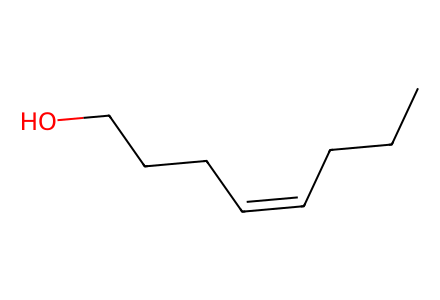
CCC/C=C\CCCO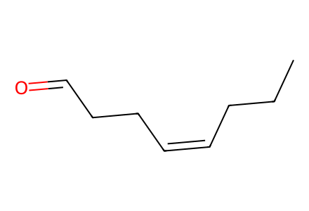
CCC/C=C\CCC=O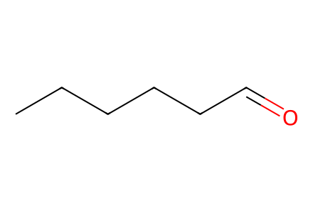
CCCCCC=O
CCC/C=C\CC[C@@H](O)C#C[Si](C)(C)C
CCCCC[C@@H](O)C#C[Si](C)(C)C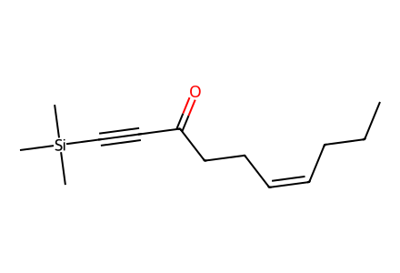
CCC/C=C\CCC(=O)C#C[Si](C)(C)C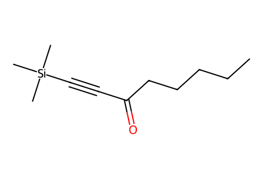
CCCCCC(=O)C#C[Si](C)(C)C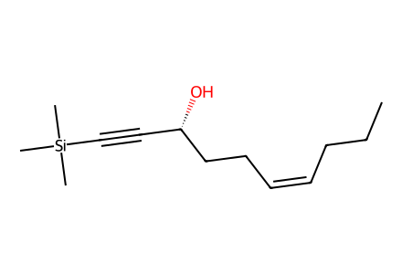
CCC/C=C\CC[C@@H](O)C#C[Si](C)(C)C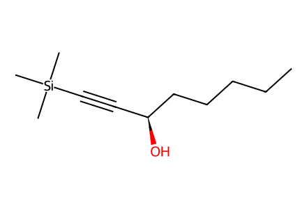
CCCCC[C@@H](O)C#C[Si](C)(C)C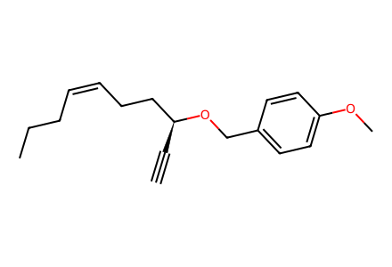
C#C[C@@H](CC/C=C\CCC)OCc1ccc(OC)cc1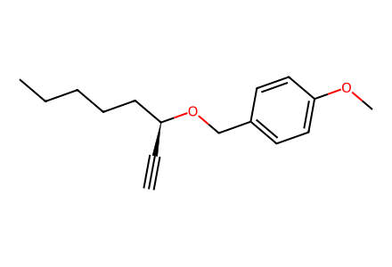
C#C[C@@H](CCCCC)OCc1ccc(OC)cc1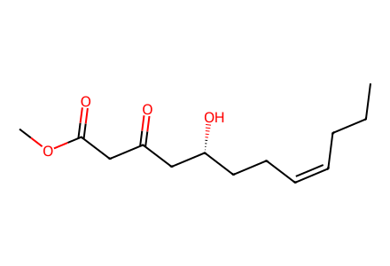
CCC/C=C\CC[C@@H](O)CC(=O)CC(=O)OC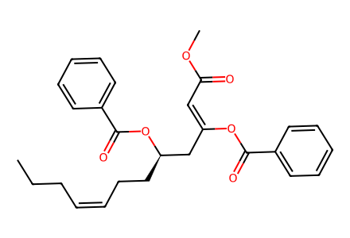
CCC/C=C\CC[C@H](C/C(=C/C(=O)OC)OC(=O)c1ccccc1)OC(=O)c1ccccc1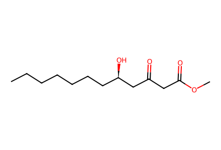
CCCCCCC[C@@H](O)CC(=O)CC(=O)OC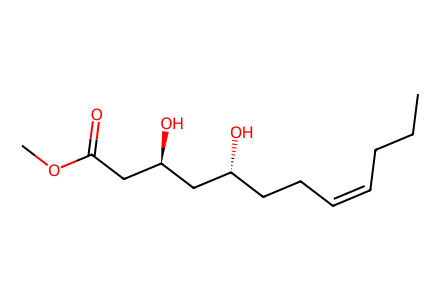
CCC/C=C\CC[C@@H](O)C[C@H](O)CC(=O)OC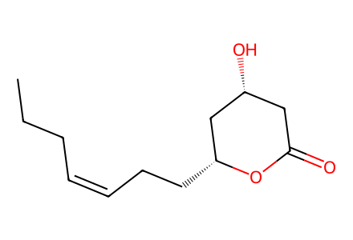
CCC/C=C\CC[C@@H]1C[C@H](O)CC(=O)O1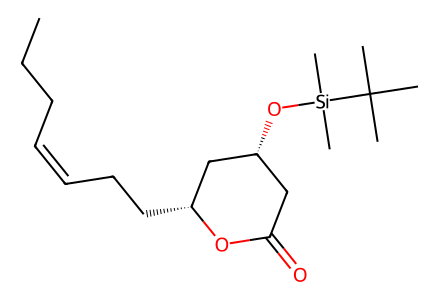
CCC/C=C\CC[C@@H]1C[C@H](O[Si](C)(C)C(C)(C)C)CC(=O)O1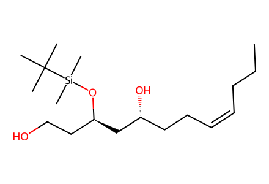
CCC/C=C\CC[C@@H](O)C[C@@H](CCO)O[Si](C)(C)C(C)(C)C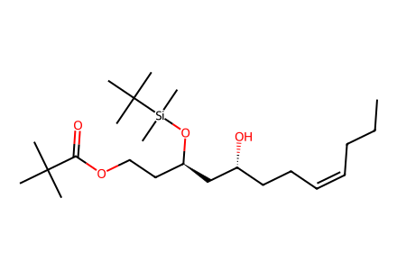
CCC/C=C\CC[C@@H](O)C[C@@H](CCOC(=O)C(C)(C)C)O[Si](C)(C)C(C)(C)C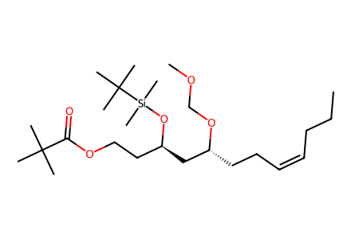
CCC/C=C\CC[C@H](C[C@@H](CCOC(=O)C(C)(C)C)O[Si](C)(C)C(C)(C)C)OCOC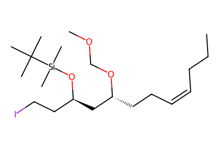
CCC/C=C\CC[C@H](C[C@@H](CCI)O[Si](C)(C)C(C)(C)C)OCOC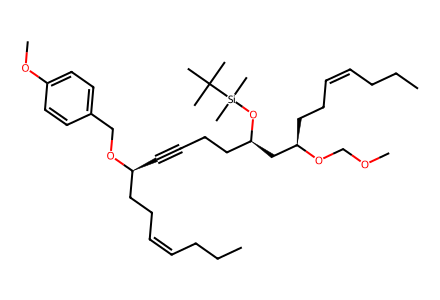
CCC/C=C\CC[C@H](C[C@@H](CCC#C[C@@H](CC/C=C\CCC)OCc1ccc(OC)cc1)O[Si](C)(C)C(C)(C)C)OCOC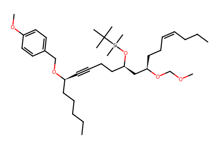
CCC/C=C\CC[C@H](C[C@@H](CCC#C[C@@H](CCCCC)OCc1ccc(OC)cc1)O[Si](C)(C)C(C)(C)C)OCOC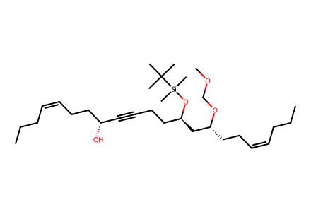
CCC/C=C\CC[C@H](C[C@@H](CCC#C[C@H](O)CC/C=C\CCC)O[Si](C)(C)C(C)(C)C)OCOC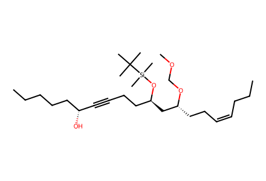
CCC/C=C\CC[C@H](C[C@@H](CCC#C[C@H](O)CCCCC)O[Si](C)(C)C(C)(C)C)OCOC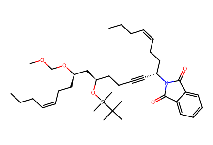
CCC/C=C\CC[C@H](C[C@@H](CCC#C[C@H](CC/C=C\CCC)N1C(=O)c2ccccc2C1=O)O[Si](C)(C)C(C)(C)C)OCOC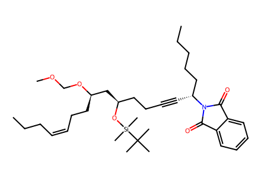
CCC/C=C\CC[C@H](C[C@@H](CCC#C[C@H](CCCCC)N1C(=O)c2ccccc2C1=O)O[Si](C)(C)C(C)(C)C)OCOC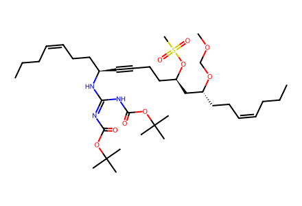
CCC/C=C\CC[C@H](C[C@@H](CCC#C[C@H](CC/C=C\CCC)N/C(=N/C(=O)OC(C)(C)C)NC(=O)OC(C)(C)C)OS(C)(=O)=O)OCOC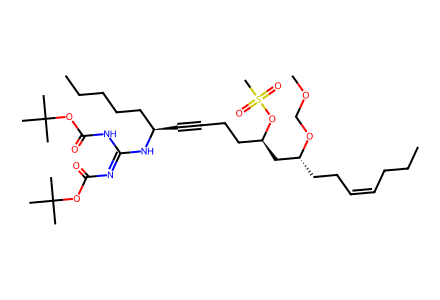
CCC/C=C\CC[C@H](C[C@@H](CCC#C[C@H](CCCCC)N/C(=N/C(=O)OC(C)(C)C)NC(=O)OC(C)(C)C)OS(C)(=O)=O)OCOC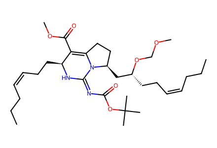
CCC/C=C\CC[C@H](C[C@@H]1CCC2=C(C(=O)OC)[C@H](CC/C=C\CCC)N/C(=N/C(=O)OC(C)(C)C)N21)OCOC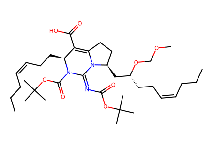
CCC/C=C\CC[C@H](C[C@@H]1CCC2=C(C(=O)O)[C@H](CC/C=C\CCC)N(C(=O)OC(C)(C)C)/C(=N/C(=O)OC(C)(C)C)N21)OCOC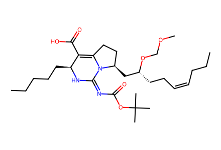
CCC/C=C\CC[C@H](C[C@@H]1CCC2=C(C(=O)O)[C@H](CCCCC)N/C(=N/C(=O)OC(C)(C)C)N21)OCOC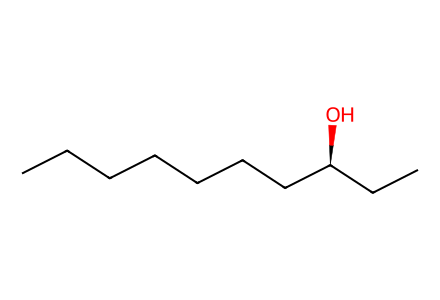
CCCCCCC[C@@H](O)CC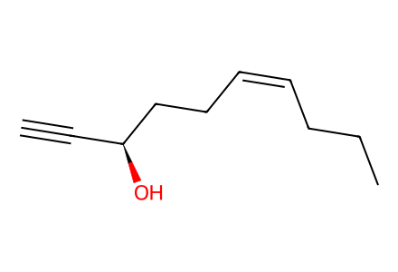
C#C[C@H](O)CC/C=C\CCC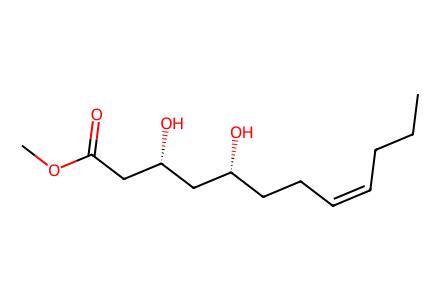
CCC/C=C\CC[C@@H](O)C[C@@H](O)CC(=O)OC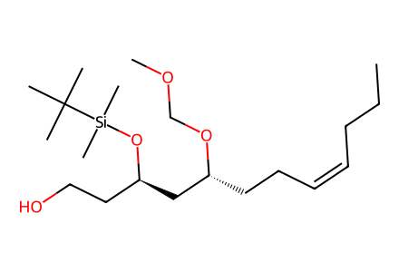
CCC/C=C\CC[C@H](C[C@@H](CCO)O[Si](C)(C)C(C)(C)C)OCOC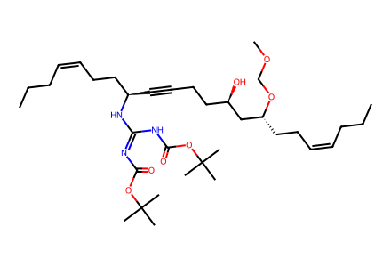
CCC/C=C\CC[C@H](C[C@H](O)CCC#C[C@H](CC/C=C\CCC)N/C(=N/C(=O)OC(C)(C)C)NC(=O)OC(C)(C)C)OCOC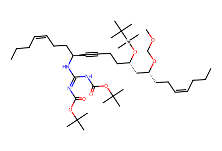
CCC/C=C\CC[C@H](C[C@H](CCC#C[C@H](CC/C=C\CCC)N/C(=N/C(=O)OC(C)(C)C)NC(=O)OC(C)(C)C)O[Si](C)(C)C(C)(C)C)OCOC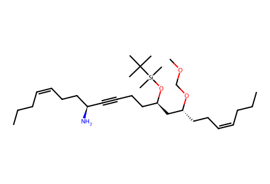
CCC/C=C\CC[C@H](C[C@@H](CCC#C[C@@H](N)CC/C=C\CCC)O[Si](C)(C)C(C)(C)C)OCOC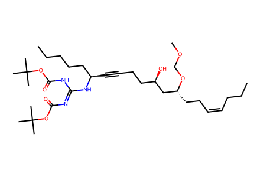
CCC/C=C\CC[C@H](C[C@H](O)CCC#C[C@H](CCCCC)N/C(=N/C(=O)OC(C)(C)C)NC(=O)OC(C)(C)C)OCOC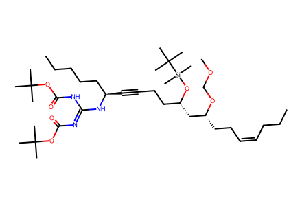
CCC/C=C\CC[C@H](C[C@H](CCC#C[C@H](CCCCC)N/C(=N/C(=O)OC(C)(C)C)NC(=O)OC(C)(C)C)O[Si](C)(C)C(C)(C)C)OCOC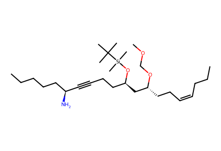
CCC/C=C\CC[C@H](C[C@@H](CCC#C[C@@H](N)CCCCC)O[Si](C)(C)C(C)(C)C)OCOC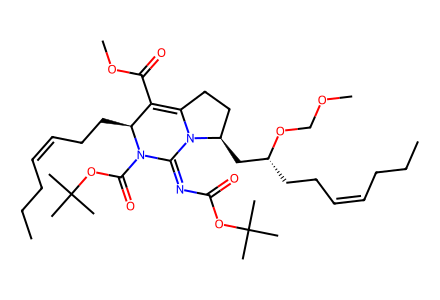
CCC/C=C\CC[C@H](C[C@@H]1CCC2=C(C(=O)OC)[C@H](CC/C=C\CCC)N(C(=O)OC(C)(C)C)/C(=N/C(=O)OC(C)(C)C)N21)OCOC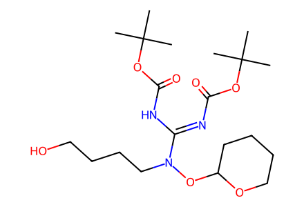
CC(C)(C)OC(=O)N=C(NC(=O)OC(C)(C)C)N(CCCCO)OC1CCCCO1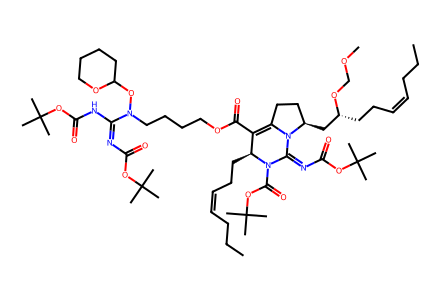
CCC/C=C\CC[C@H](C[C@@H]1CCC2=C(C(=O)OCCCCN(OC3CCCCO3)C(=NC(=O)OC(C)(C)C)NC(=O)OC(C)(C)C)[C@H](CC/C=C\CCC)N(C(=O)OC(C)(C)C)/C(=N/C(=O)OC(C)(C)C)N21)OCOC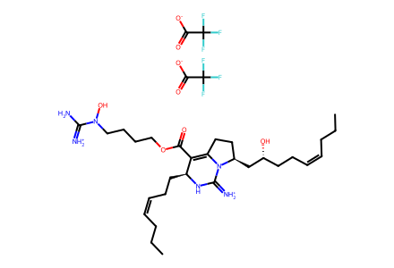
CCC/C=C\CC[C@@H](O)C[C@@H]1CCC2=C(C(=O)OCCCCN(O)C(N)=[NH2+])[C@H](CC/C=C\CCC)NC(=[NH2+])N21.O=C([O-])C(F)(F)F.O=C([O-])C(F)(F)F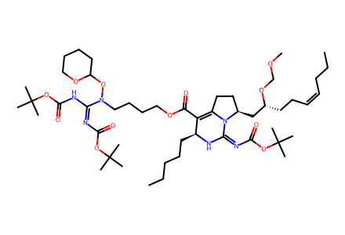
CCC/C=C\CC[C@H](C[C@@H]1CCC2=C(C(=O)OCCCCN(OC3CCCCO3)C(=NC(=O)OC(C)(C)C)NC(=O)OC(C)(C)C)[C@H](CCCCC)N/C(=N/C(=O)OC(C)(C)C)N21)OCOC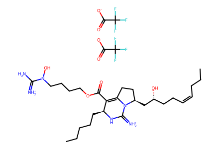
CCC/C=C\CC[C@@H](O)C[C@@H]1CCC2=C(C(=O)OCCCCN(O)C(N)=[NH2+])[C@H](CCCCC)NC(=[NH2+])N21.O=C([O-])C(F)(F)F.O=C([O-])C(F)(F)F
C#C[Si](C)(C)C
COc1ccc(CCl)cc1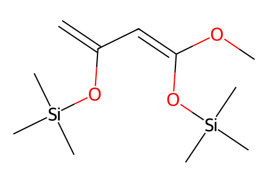
C=C(/C=C(/OC)O[Si](C)(C)C)O[Si](C)(C)C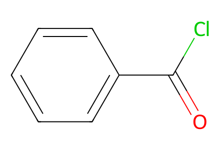
O=C(Cl)c1ccccc1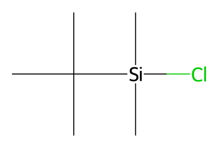
CC(C)(C)[Si](C)(C)ClCC(C)(C)C(=O)Cl
COCClO=C1NC(=O)c2ccccc21CC(C)(C)OC(=O)N=C(NC(=O)OC(C)(C)C)n1cccn1CS(=O)(=O)Cl
CC(C)(C)OC(=O)OC(=O)OC(C)(C)C
[C-]#[O+]
CO